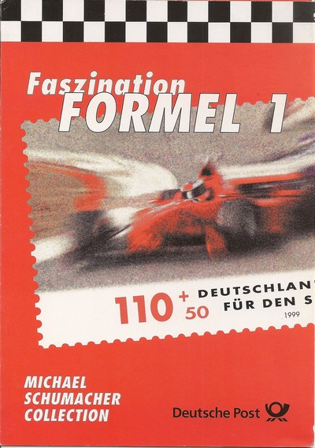
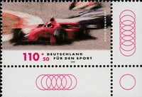
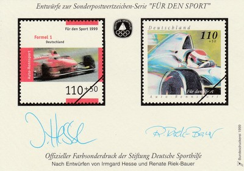
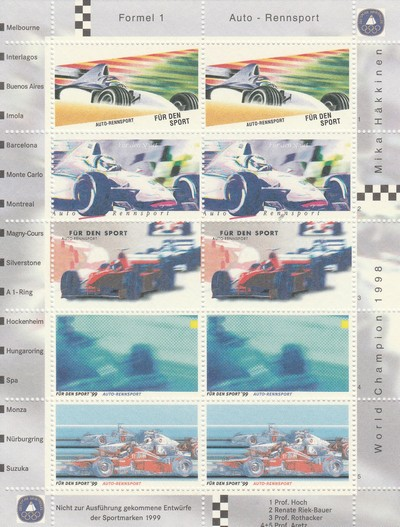
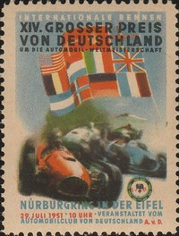

Germany
 |
 Issue date: 18th February 1999 A commemorative pack featuring Michael Schumacher. In 1998, Finnish driver Mika Hakkinen became Schumacher's main title competition. Hakkinen won the first two races of the season, gaining a 16 point advantage over Schumacher. With the Ferrari improving significantly in the second half of the season, Schumacher won six races and had five other podium finishes. Ferrari took a 1-2 finish at the Italian Grand Prix, which tied Schumacher with Hakkinen for the lead of the Drivers' Championship with 80 points, but Hakkinen won the Championship by winning the final two races. There were two controversies; at the British Grand Prix Schumacher was leading on the last lap when he turned into the pit lane, crossed the start finish line and stopped for a ten second stop go penalty. There was some doubt whether this counted as serving the penalty, but the win stood. At Spa, Schumacher was leading the race by 40 seconds in heavy spray, but collided with David Coulthard's McLaren when the Scot, a lap down, slowed in very poor visibility to let Schumacher past. After both cars returned to the pits, Schumacher rushed to McLaren's garage and accused Coulthard of trying to kill him. Schumacher's efforts helped Ferrari win the Constructors title in 1999. He lost his chance to win the Drivers' Championship at the British Grand Prix: at the high-speed Stowe Corner, his car's rear brake failed, sending him off the track and resulting in a broken leg.  Issue date: 18th February 1999 One value from a set of stamps featuring various sports including Formula 1.  Issue date: 1999 A mini sheet of two stamps featuring Formula 1.  Issue date: 1999 A mini sheet of eight values featuring F1, in particular Mika Hakkinen's 1998 drivers' title. Hakkinen won eight races in the McLaren MP4/13 giving him the title; with team mate David Coulthard contributing another win, McLaren also took the constructors' championship that year.  Issue date: 29th July 1951 A single stamp commemorating the 14th German Grand Prix, held at the Nurburgring Nordschleife on 29th July 1951. The race was won by Alberto Ascari (Ferrari), Juan Manuel Fangio (Alfa Romeo) was second and Jose Frolian Gonzalez (Ferrari) was third. The race was 20 laps of the 14 mile course. Alfa Romeo fielded four cars, with local driver Paul Pietsch replacing Consalvo Sanesi, joining Fangio, Farina and Bonetto. Following on from their maiden victory at Silverstone, Ferrari also entered four drivers. Piero Taruffi rejoined their lineup, alongside Ascari, Villoresi and British Grand Prix winner Jose Froilan Gonzalez. Ferrari continued their good form from the previous event, with Ascari and Gonzalez the fastest two qualifiers. Fangio and Farina completed the front row, with Villoresi, Taruffi and Pietsch making up the second row. Nino Farina initially took the lead, but, by the end of the first lap, had been passed by Fangio, Ascari and Gonzalez. Paul Pietsch was running in fifth, but ended up at the back of the field after going off on the second lap. When Farina was forced to retire due to overheating problems, Fangio was left as the sole Alfa Romeo able to take the fight to the Ferrari drivers. Alberto Ascari took the lead on the fifth lap as a result of Fangio's first pitstop, but Fangio returned to the lead when Ascari took to the pits. As the Alfas required two pitstops, as opposed to just one for the Ferraris, Fangio needed to build a large lead in his second stint if he wanted to retain the lead after his second stop. He was unable to do so, therefore Ascari reclaimed the lead on the fifteenth lap of the race. Due to a misbehaving engine, Fangio was unable to take advantage of an unexpected tyre change for Ascari, meaning that the Italian took his maiden World Championship race victory by over half a minute from Fangio. Gonzalez completed the podium, with the remaining points positions going to the other works Ferraris of Villoresi and Taruffi. Ascari's victory took him to second in the Championship standings, ten points adrift of Fangio, who extended his lead from the previous race. After his second consecutive podium, Jose Froilan Gonzalez moved up to third in the standings, level on points with Farina and Villoresi. |